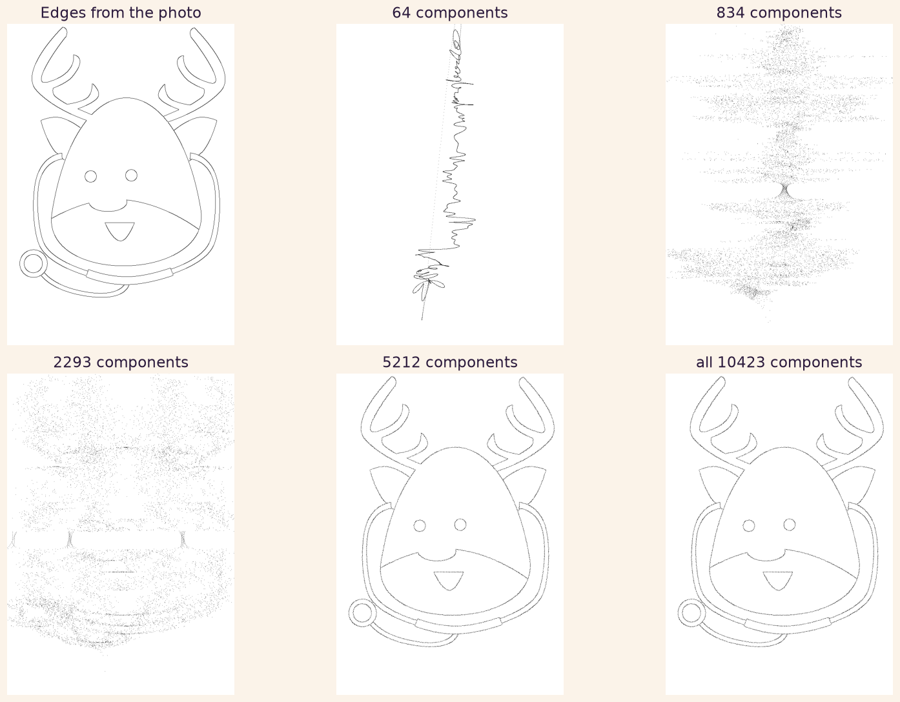
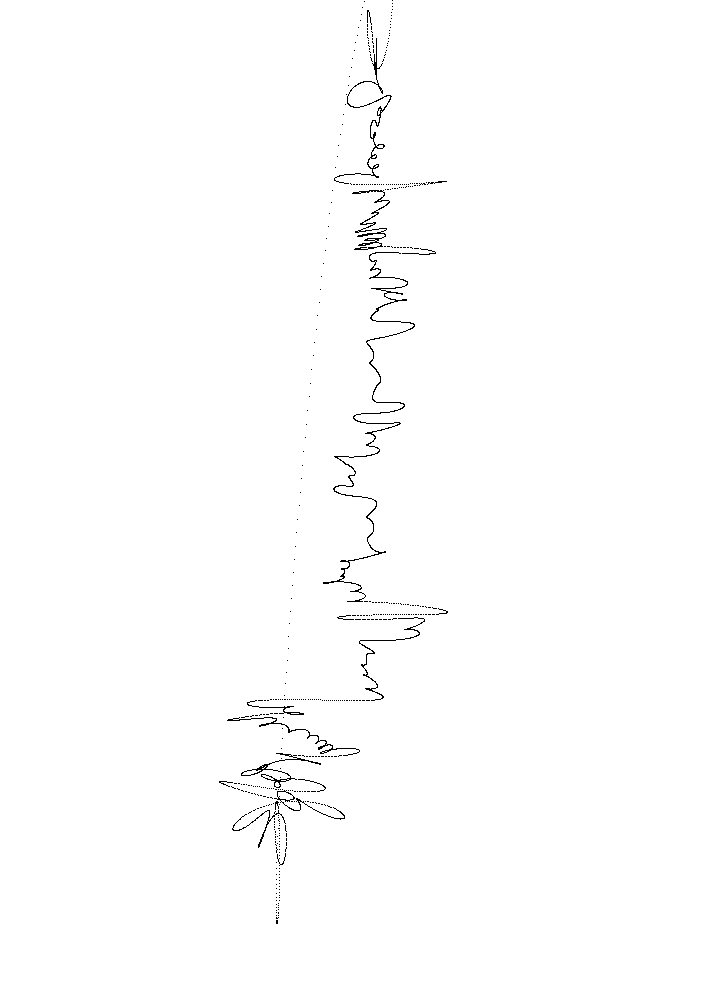

In the spirit of the season, here is a project that sits happily between art and science. We will take an ordinary festive picture, reduce it to a clean line drawing, and then pull that drawing apart into its ingredients with the Fast Fourier Transform before putting it back together again. It began life as a workshop for codebar, whose sessions help people from underrepresented groups into coding, so it is written to be followed along, not just admired.
Two techniques do the heavy lifting: edge detection with OpenCV, to turn a photo into a line, and the FFT with NumPy, to take that line apart and rebuild it from a chosen number of pieces. If you would like the intuition for why any drawing can be built from spinning circles first, its companion piece, Drawn by Circles, is the place to start. This page is the hands-on version, with the actual code.
Everything here lives in a small repository, github.com/PhilippeGuyard/rudolph, with a fuller walkthrough in an accompanying Google Colab notebook.
01 What the Fourier transform actually does
The Fast Fourier Transform is a kind of mathematical magician. It takes a complicated signal and breaks it into simpler building blocks. Imagine listening to an orchestra and being able to isolate each instrument from the whole symphony; that is essentially what the FFT does, but with signals instead of music. It takes a complex waveform and separates it into its basic frequencies, telling you how much of each frequency is present in the original.
In everyday terms, it reveals the "ingredients" that make up a complex "dish" of data. Whether the data is a sound wave, an image, or anything else, the transform lets you see the individual components that are usually blended together. Each one comes back as a complex number: the size of that number is the amplitude of a wave, its angle is the wave's phase, and its position in the result tells you the frequency. Combine those waves in the right amounts, phases and frequencies, and you rebuild the original signal exactly. Better still, the algorithm does all this in O(n log n) time, which is what makes it practical on real data.
The plan for the rest of this page: turn a picture into a line, treat that line as a signal, transform it, and then rebuild it from a growing handful of components to watch the drawing reappear.
02 From photo to line drawing
First we need a line. A photograph is a dense grid of coloured pixels, far too much to treat as a single tidy signal, so we reduce it to just its outlines using OpenCV's Canny edge detector. We download an image, convert it to a NumPy array, decode it, and detect edges.
Python · main.pyimport cv2
import numpy as np
import urllib.request
def load_and_process_image(url):
arr = np.asarray(
bytearray(urllib.request.urlopen(url).read()), dtype=np.uint8
)
image = cv2.imdecode(arr, -1)
edges = cv2.Canny(image, 100, 200)
return edges
Our festive test subject is a cheerful cartoon reindeer. After edge detection, the fills and shading fall away and only the outlines remain: antlers, ears, that unmistakable nose, the loop of a stethoscope.
03 Turn the line into a signal, and back
Here is the clever step. Every lit edge pixel has an x and a y coordinate. We fold those two numbers into one complex number, x as the real part and y as the imaginary part, so the whole drawing becomes a single stream of complex numbers: a signal the FFT can chew on.
To rebuild the drawing from only part of that signal, we transform it, keep just the first and last n_components coefficients, zero out the rest, and run the inverse transform. Keeping few coefficients gives a rough sketch; keeping many restores the detail.
Python · main.pydef perform_fft_transformation(coords, n_components, total_length):
fft_result = np.fft.fft(coords)
fft_reconstruct = np.zeros_like(fft_result)
fft_reconstruct[:n_components] = fft_result[:n_components]
fft_reconstruct[-n_components:] = fft_result[-n_components:]
reconstructed_coords = np.fft.ifft(fft_reconstruct)
return reconstructed_coords
# fold each edge point into one complex number: x + iy
y, x = np.where(edges == 255)
coords = x + 1j * y
Now reconstruct the reindeer with a growing number of components and watch it reappear. There is a wrinkle worth knowing: the edge pixels come out in the order NumPy scans the image, row by row, not in the order you would trace them with a pen. So a small number of components does not give a neat, simplified reindeer; it gives an abstract vertical squiggle, the transform's best coarse guess at that scan-ordered signal. Only as the components pile up does the familiar shape resolve out of the noise.

04 Watch it draw itself
Strung together as an animation, one frame per step, the whole process becomes a little machine drawing Rudolph in front of you: from a single wandering line, through a scribbled ghost, to the finished reindeer. Each frame simply adds a few more Fourier components than the last.

Python · main.pyimport imageio
def generate_gif_images(n_steps, fft_length, coords, dimensions):
gif_images = []
for i in range(1, n_steps + 1):
n_components = i * (fft_length // n_steps)
reconstructed = perform_fft_transformation(
coords, n_components, fft_length
)
x_r = np.real(reconstructed).astype(int)
y_r = np.imag(reconstructed).astype(int)
x_r, y_r = filter_valid_coords(x_r, y_r, dimensions)
frame = np.zeros(dimensions, dtype=np.uint8)
frame[y_r, x_r] = 255
gif_images.append(frame)
return gif_images
imageio.mimsave("animated_from_fft.gif", gif_images, duration=0.5)
05 Have a go
That is the whole idea: a photo becomes a line, the line becomes a signal, the signal becomes a list of frequencies, and any slice of that list rebuilds a version of the drawing. Swap in your own picture, change the number of components, and see what falls out. The repository also throws in a couple of bonus tracks, the same trick done with Principal Component Analysis instead of the FFT, and the gif-making helper used above.
Merry Christmas, and happy transforming. The maths that streams your films and scans your bones will just as cheerfully draw you a reindeer.
→ The code on GitHub → The full Colab notebook → About codebar